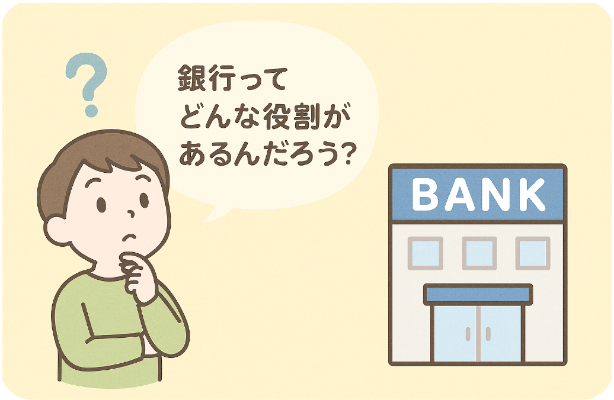
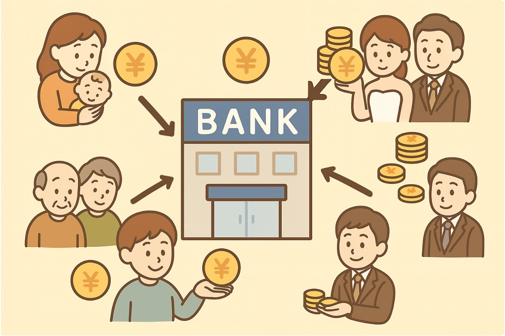
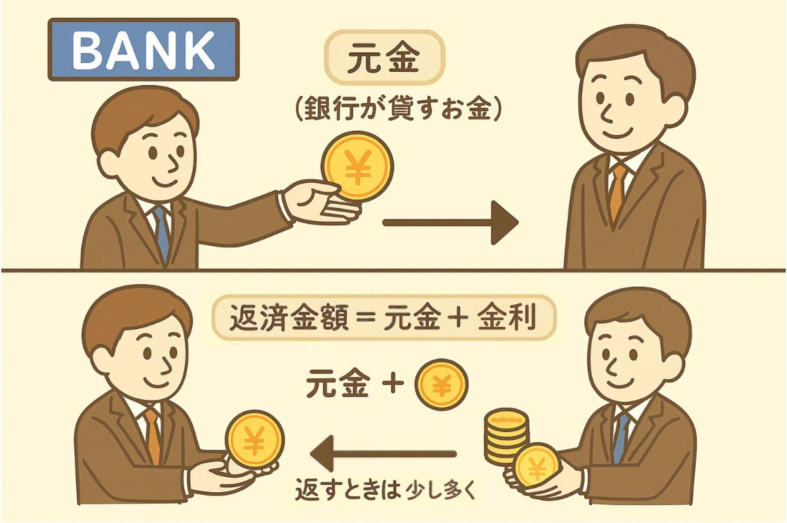
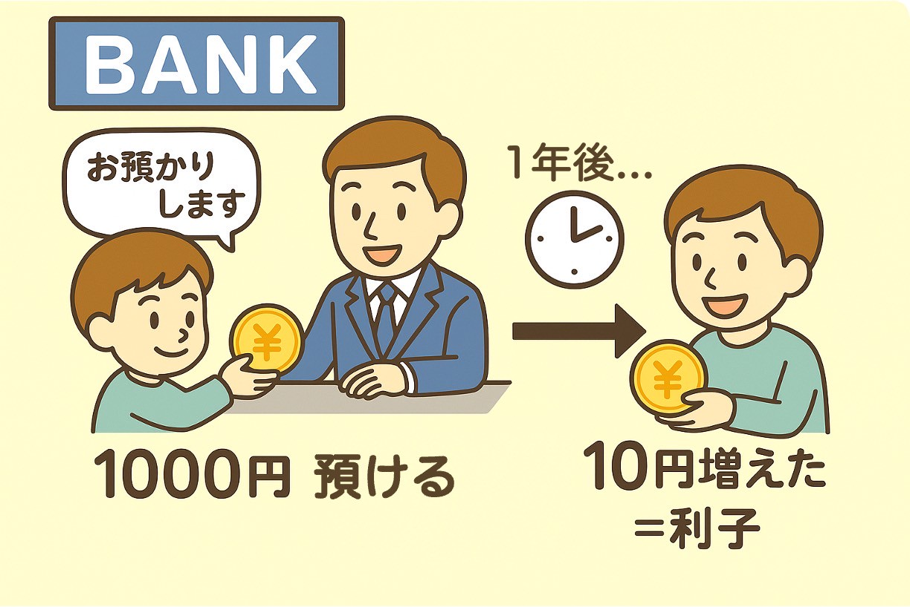
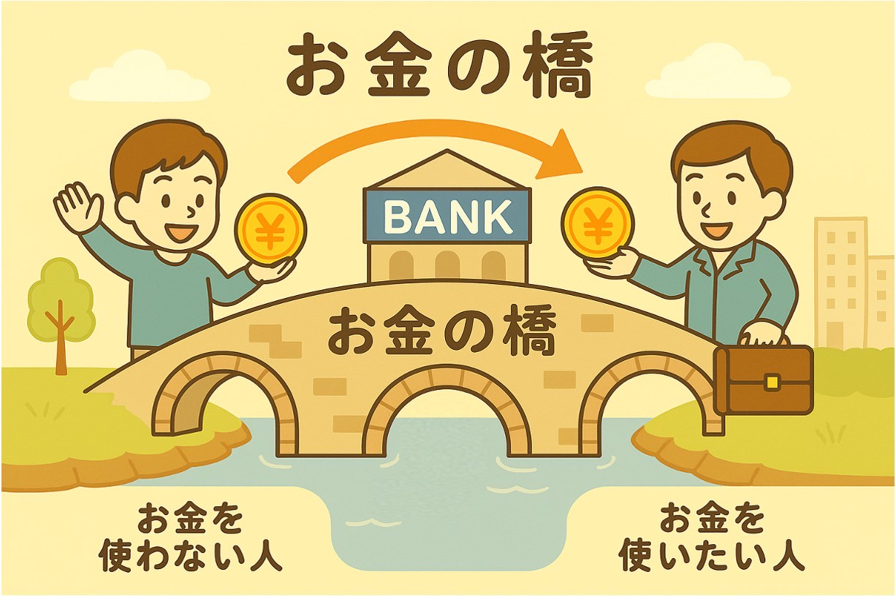

銀行ってどんな場所だと思いますか？
「お金をしまっておく金庫みたいなところ」と思っている人もいるかもしれません。
でも実は、銀行にはもっと大切なはたらきがあるんです。
● 銀行は「お金を集める」場所

たとえば、Aさんが1000円、
Bさんが5000円、Cさんが1万円…
いろいろな人が少しずつお金をあずけると、
銀行には大きなお金が集まってきます。
もちろん、あずけたお金はちゃんと返ってきます。
銀行は国から許可をもらっている、
安全で信頼できる場所です。
● 銀行は「お金を貸す」場所でもある

集まったお金は、ずっと金庫に入っているわけではありません。
銀行には、もうひとつの大切な役割があります。それは「お金を必要な人に貸す」ことです。
たとえば、パン屋さんを始めたい人がいて、「お店をつくるために100万円が必要です！」と言ったとします。
銀行は「あとで返してくれるなら、お貸ししますよ」と言ってお金を貸してあげます。
そして、借りた人はあとで元のお金＋少し多く」を返します。
この「少し多く」の部分を「金利（きんり）」と呼びます。
● あずけた人にも「おまけ」がつく
「では、お金をあずけた人には何があるのでしょうか？
それが「利子」というおまけです。
たとえば、1000円を1年間あずけると、
1010円になって返ってくる、というようなしくみです。
（※今は利子がとても小さい時代なので、
大きくはふえませんが、たしかにふえます）

● 銀行は「お金の橋」
このように、銀行は「お金を使わない人」からあずかり、
「お金を使いたい人」に貸すことで、
社会の中でお金がうまく回るようにしているのです。
言いかえると、銀行は「お金の橋」。
まだ使われていないお金を、社会の中で
元気に働かせる手助けをしている場所なんです。

●あなたのお金が、社会の力に
だからこそ、おこづかいを銀行にあずけることは、
自分のためになるだけでなく、社会の役に立つことでもあります。
パン屋さんの開店、工場の機械づくり、
病院の設備、いろいろなところで役立っているかもしれません。
今度銀行にお金をあずけるときには、こう考えてみてください。
「このお金が、どこかで誰かの力になってるかも」
そう思えたあなたは、もう立派な“投資家”のなかまです。